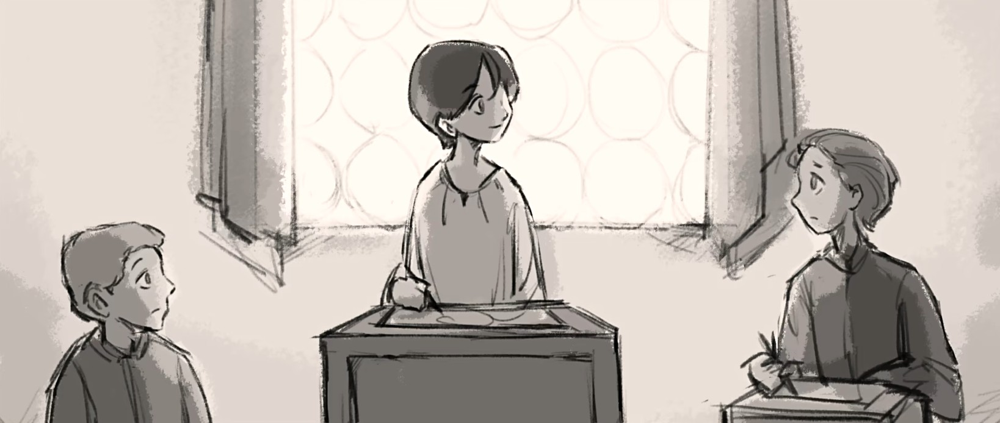

Year 1545: the Butterfly that Lagged Behind
That afternoon, I spread out my paper and pencils again, planning to draw the final portrait for Florence.
For centuries, perhaps even longer, I've survived by painting people. Portraits have always meant a lot for me.
When I was very young, I discovered that, whenever I drew someone,
I could glimpse fragments of their important memories.

No one understood what I meant.
Little by little, I realized I was different.
I decided to keep THIS ability a secret.
But my OTHER ability...that one was much harder to hide.
I noticed that my body had stopped growing, or perhaps it did at a very slow pace.
1545...
1555...
People's eyes gradually shifted, tinged with strangeness, with fear.
They said I was descended from witches. They tried to catch me and burn me alive.
And so, with no choices left, I began the life of earning my way through portraits.
I migrated from place to place, calling every corner of the world a home.